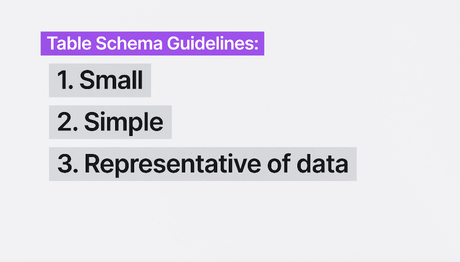

First we will learn about some basics of PostgreSQL database
Postgres structure have server in it have multiple databases, Each database have multiple schemas And Each schemas have multiple tables.

Data Types is describing your data is which type like number,character,Text etc.
Integers are fast and accurate, they represent whole numbers.
Think about age how much a person live maybe max 100 years so we don't need here to specify more than 3, Here WE can use smallint that ranges between -32,768 to 32,767, You can even use smallint alias that is int2.
integer ranges between -2,147,483,648 to 2,147,483,647,integer alias is int4. It can be used for maybe products stock and everything that have large data.
bigint ranges between -9,223,372,036,854,775,808 to -9,223,372,036,854,775,808, bigint alias is int8, now that is quintillion size of data we can use Primary key for that we don't know where it will end and also file bytes etc that you can think of very big data.
Pick that's fit your data if data is small use smallint etc.Numeric are very accurate, precised and very slow they hold decimal numbers.
You can write decimal also when describing Data Type in table they work same .
They can also take parameter as (precision, scale), Here precision is total numbers and scale represent number after dot point. For Example 32.145. precision will be 5(total digits) and scale will be 3(after dot numbers), but if you give precision as 6(total digits) then database will give error,
If you will try to give scale as 2 instead of 3 it will round up and the number will be rounded to 15 instead of 145.
You can give scale value to -2 then it will round up number before dot. If the number is 1234567.899 then it will represent number as 1234600, here zeroes doesn't store in the database so it is only 5 total digit not 7.
If you don't give any value in scale its default value is 0.
They can represent number bigger than bigint if the parameter doen't used .
Use numeric if you want precision in your data like for money calculating , where precision matters most, next up is floating point.